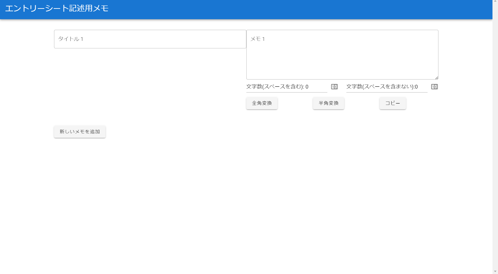

Vtuber配信スケジュール確認サイト

| 使用言語など | Next.js,TypeScript,Vercel,tailwindCSS等 |
|---|---|
| 作成経緯 |
私はバーチャルYouTuber(以下「Vtuber」と呼ぶ。)の配信を見ることにハマっており、Vtuberの配信スケジュールを一目で確認できるサイトの作成に挑戦したいと考えた。 そこで、以下の記事(https://zenn.dev/eternaleight/books/fedd5f1ce2f9fc)を見つけた。 こちらの記事では、Hololiveに所属するVtuberのみの配信状況について表示するサイトとなっている。 しかし、私は特に4大事務所と呼ばれる「Hololive」や「にじさんじ」、「あおぎり高校」、「ぶいすぽっ！」に所属するVtuberを見ることが好きであったため、4大事務所に所属するVtuberの配信スケジュールを表示したいと考え、本プログラムを作成した。 |
| 内容 |
Next.jsとTypeScriptを使用して開発を行った。 ヘッダー部分には現在配信している、または今後配信予定であるVtuberのアイコンが表示される。 そして、ヘッダー以下には配信中のVtuberの配信サムネイルと配信予定のVtuberの配信サムネイルが表示される。 これらの情報はholodexというサイトのAPIを使用して取得している。 ヘッダーのDrawerボタンをクリックすると画面左側でサイドバーが開く。 サイドバーにはAll GroupボタンやHololiveボタン、Nijisanjiボタンなどがある。 サイドバーのAll Groupボタンを押すと4大事務所のどちらかに所属する全Vtuberのアイコンと配信状況が表示され、Hololiveなどの各事務所名に対応する名前のボタンを押すことで各事務所に所属するVtuberのアイコンと配信状況を表示することができる。 |
| プログラムファイル | GitHub |
| 実行結果 | 本プログラムで作成したサイト |